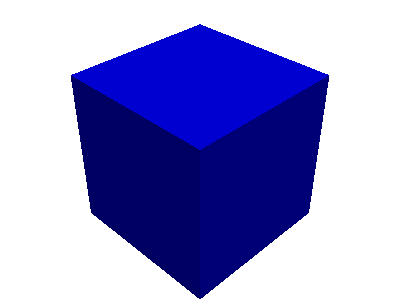
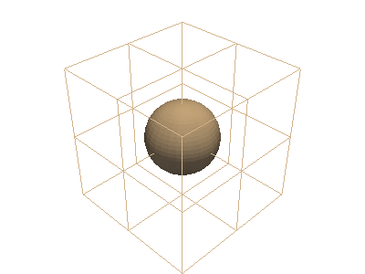
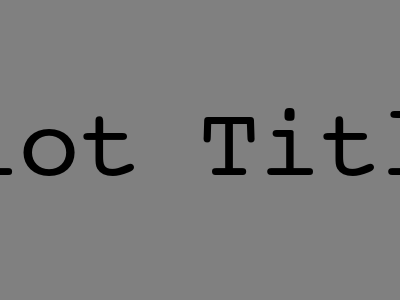
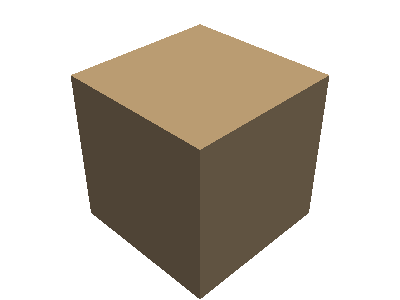

pyvista.Plotter#
- class Plotter(*args, **kwargs)[source]#
Plotting object to display vtk meshes or numpy arrays.
- Parameters:
- off_screenbool,
optional Renders off screen when
True. Useful for automated screenshots.- notebookbool,
optional When
True, the resulting plot is placed inline a jupyter notebook. Assumes a jupyter console is active. Automatically enablesoff_screen.- shape
listortuple,optional Number of sub-render windows inside of the main window. Specify two across with
shape=(2, 1)and a two by two grid withshape=(2, 2). By default there is only one render window. Can also accept a string descriptor as shape. E.g.:shape="3|1"means 3 plots on the left and 1 on the right,shape="4/2"means 4 plots on top and 2 at the bottom.
- borderbool,
optional Draw a border around each render window. Default
False.- border_color
color_like,optional Either a string, rgb list, or hex color string. For example:
color='white'color='w'color=[1.0, 1.0, 1.0]color='#FFFFFF'
- window_size
list,optional Window size in pixels. Defaults to
[1024, 768], unless set differently in the relevant theme’swindow_sizeproperty.- multi_samples
int,optional The number of multi-samples used to mitigate aliasing. 4 is a good default but 8 will have better results with a potential impact on performance.
- line_smoothingbool,
optional If
True, enable line smoothing.- polygon_smoothingbool,
optional If
True, enable polygon smoothing.- lighting
str,optional What lighting to set up for the plotter. Accepted options:
'light_kit': a vtk Light Kit composed of 5 lights.'three lights': illumination using 3 lights.'none': no light sources at instantiation.
The default is a
'light_kit'(to be precise, 5 separate lights that act like a Light Kit).- theme
pyvista.themes.DefaultTheme,optional Plot-specific theme.
- off_screenbool,
Examples
>>> import pyvista >>> from pyvista import examples >>> mesh = examples.load_hexbeam() >>> another_mesh = examples.load_uniform() >>> plotter = pyvista.Plotter() >>> actor = plotter.add_mesh(mesh, color='red') >>> actor = plotter.add_mesh(another_mesh, color='blue') >>> plotter.show()
 - add_cursor(bounds=(-1.0, 1.0, -1.0, 1.0, -1.0, 1.0), focal_point=(0.0, 0.0, 0.0), color=None)[source]#
Add a cursor of a PyVista or VTK dataset to the scene.
- Parameters:
- bounds
length6 sequence, default: (-1.0, 1.0, -1.0, 1.0, -1.0, 1.0) Specify the bounds in the format of:
(xmin, xmax, ymin, ymax, zmin, zmax)
Defaults to
(-1.0, 1.0, -1.0, 1.0, -1.0, 1.0).- focal_point
listortuple,optional The focal point of the cursor.
Defaults to
(0.0, 0.0, 0.0).- color
color_like,optional Either a string, RGB sequence, or hex color string. For one of the following.
color='white'color='w'color=[1.0, 1.0, 1.0]color='#FFFFFF'
- bounds
- Returns:
vtk.vtkActorVTK actor of the 2D cursor.
Examples
>>> import pyvista >>> sphere = pyvista.Sphere() >>> plotter = pyvista.Plotter() >>> _ = plotter.add_mesh(sphere) >>> _ = plotter.add_cursor() >>> plotter.show()

- add_title(title, font_size=18, color=None, font=None, shadow=False)[source]#
Add text to the top center of the plot.
This is merely a convenience method that calls
add_textwithposition='upper_edge'.- Parameters:
- title
str The text to add the rendering.
- font_size
float,optional Sets the size of the title font. Defaults to 16 or the value of the global theme if set.
- color
color_like, optional, Either a string, rgb list, or hex color string. Defaults to white or the value of the global theme if set. For example:
color='white'color='w'color=[1.0, 1.0, 1.0]color='#FFFFFF'
- font
str,optional Font name may be
'courier','times', or'arial'.- shadowbool,
optional Adds a black shadow to the text. Defaults to
False.
- title
- Returns:
vtk.vtkTextActorText actor added to plot.
Examples
>>> import pyvista >>> pl = pyvista.Plotter() >>> pl.background_color = 'grey' >>> actor = pl.add_title('Plot Title', font='courier', color='k', ... font_size=40) >>> pl.show()

- show(title=None, window_size=None, interactive=True, auto_close=None, interactive_update=False, full_screen=None, screenshot=False, return_img=False, cpos=None, use_ipyvtk=None, jupyter_backend=None, return_viewer=False, return_cpos=None, before_close_callback=None, **kwargs)[source]#
Display the plotting window.
- Parameters:
- title
str,optional Title of plotting window. Defaults to
pyvista.global_theme.title.- window_size
list,optional Window size in pixels. Defaults to
pyvista.global_theme.window_size.- interactivebool,
optional Enabled by default. Allows user to pan and move figure. Defaults to
pyvista.global_theme.interactive.- auto_closebool,
optional Exits plotting session when user closes the window when interactive is
True. Defaults topyvista.global_theme.auto_close.- interactive_updatebool,
optional Disabled by default. Allows user to non-blocking draw, user should call
BasePlotter.update()in each iteration.- full_screenbool,
optional Opens window in full screen. When enabled, ignores
window_size. Defaults topyvista.global_theme.full_screen.- screenshot
str,pathlib.Path,BytesIOor bool,optional Take a screenshot of the initial state of the plot. If a string, it specifies the path to which the screenshot is saved. If
True, the screenshot is returned as an array. Defaults toFalse. For interactive screenshots it’s recommended to first callshow()withauto_close=Falseto set the scene, then save the screenshot in a separate call toshow()orPlotter.screenshot().- return_imgbool, default:
False Returns a numpy array representing the last image along with the camera position.
- cpos
list(tuple(floats)),optional The camera position. You can also set this with
Plotter.camera_position.- use_ipyvtkbool,
optional Deprecated. Instead, set the backend either globally with
pyvista.set_jupyter_backend('ipyvtklink')or withbackend='ipyvtklink'.- jupyter_backend
str,optional Jupyter notebook plotting backend to use. One of the following:
'none': Do not display in the notebook.'pythreejs': Show apythreejswidget'static': Display a static figure.'ipygany': Show aipyganywidget'panel': Show apanelwidget.
This can also be set globally with
pyvista.set_jupyter_backend().- return_viewerbool,
optional Return the jupyterlab viewer, scene, or display object when plotting with jupyter notebook.
- return_cposbool,
optional Return the last camera position from the render window when enabled. Default based on theme setting. See
pyvista.themes.DefaultTheme.return_cpos.- before_close_callback
Callable,optional Callback that is called before the plotter is closed. The function takes a single parameter, which is the plotter object before it closes. An example of use is to capture a screenshot after interaction:
def fun(plotter): plotter.screenshot('file.png')
- **kwargs
dict,optional Developer keyword arguments.
- title
- Returns:
- cpos
list List of camera position, focal point, and view up. Returned only when
return_cpos=Trueor set in the default global or plot theme. Not returned when in a jupyter notebook andreturn_viewer=True.- image
np.ndarray Numpy array of the last image when either
return_img=Trueorscreenshot=Trueis set. Not returned when in a jupyter notebook withreturn_viewer=True. Optionally contains alpha values. Sized:[Window height x Window width x 3] if the theme sets
transparent_background=False.[Window height x Window width x 4] if the theme sets
transparent_background=True.
widgetIPython widget when
return_viewer=True.
- cpos
Notes
Please use the
q-key to close the plotter as some operating systems (namely Windows) will experience issues saving a screenshot if the exit button in the GUI is pressed.Examples
Simply show the plot of a mesh.
>>> import pyvista as pv >>> pl = pv.Plotter() >>> _ = pl.add_mesh(pv.Cube()) >>> pl.show()
 Take a screenshot interactively. Screenshot will be of the first image shown, so use the first call with
auto_close=Falseto set the scene before taking the screenshot.>>> pl = pv.Plotter() >>> _ = pl.add_mesh(pv.Cube()) >>> pl.show(auto_close=False) >>> pl.show(screenshot='my_image.png')
Display a
pythreejsscene within a jupyter notebook>>> pl.show(jupyter_backend='pythreejs')
Return a
pythreejsscene.>>> pl.show(jupyter_backend='pythreejs', return_viewer=True)
Obtain the camera position when using
show.>>> pl = pv.Plotter()
>>> _ = pl.add_mesh(pv.Sphere()) >>> pl.show(return_cpos=True) [(2.223005211686484, -0.3126909484828709, 2.4686209867735065), (0.0, 0.0, 0.0), (-0.6839951597283509, -0.47207319712073137, 0.5561452310578585)]